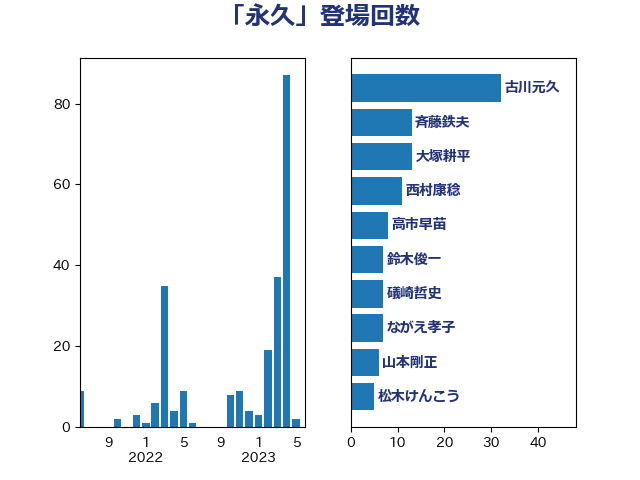

単語「永久」

| 古川元久 | 国民民主党 | 32 回 |
| 斉藤鉄夫 | 公明党 | 13 回 |
| 大塚耕平 | 国民民主党 | 13 回 |
| 西村康稔 | 自由民主党 | 11 回 |
| 高市早苗 | 自由民主党 | 8 回 |
| 鈴木俊一 | 自由民主党 | 7 回 |
| 礒崎哲史 | 国民民主党 | 7 回 |
| ながえ孝子 | 無所属 | 7 回 |
| 山本剛正 | 日本維新の会 | 6 回 |
| 松木けんこう | 立憲民主党 | 5 回 |
| 田村まみ | 国民民主党 | 4 回 |
| 岸田文雄 | 自由民主党 | 4 回 |
| 小山展弘 | 立憲民主党 | 4 回 |
| 加田裕之 | 自由民主党 | 4 回 |
| 音喜多駿 | 日本維新の会 | 3 回 |
| 長妻昭 | 立憲民主党 | 3 回 |
| 小熊慎司 | 立憲民主党 | 3 回 |
| 大西健介 | 立憲民主党 | 3 回 |
| 城井崇 | 立憲民主党 | 3 回 |
| 仁比聡平 | 日本共産党 | 3 回 |
| 階猛 | 立憲民主党 | 2 回 |
| 阿部弘樹 | 日本維新の会 | 2 回 |
| 長坂康正 | 自由民主党 | 2 回 |
| 鈴木義弘 | 国民民主党 | 2 回 |
| 舩後靖彦 | れいわ新選組 | 2 回 |
| 福島伸享 | 無所属 | 2 回 |
| 牧山ひろえ | 立憲民主党 | 2 回 |
| 浜口誠 | 国民民主党 | 2 回 |
| 林芳正 | 自由民主党 | 2 回 |
| 斎藤アレックス | 国民民主党 | 2 回 |
| 徳永エリ | 立憲民主党 | 2 回 |
| 岡田直樹 | 自由民主党 | 2 回 |
| 伊波洋一 | 無所属 | 2 回 |
| 高橋千鶴子 | 日本共産党 | 1 回 |
| 鎌田さゆり | 立憲民主党 | 1 回 |
| 道下大樹 | 立憲民主党 | 1 回 |
| 越智隆雄 | 自由民主党 | 1 回 |
| 赤木正幸 | 日本維新の会 | 1 回 |
| 谷田川元 | 立憲民主党 | 1 回 |
| 西田昌司 | 自由民主党 | 1 回 |
| 萩生田光一 | 自由民主党 | 1 回 |
| 荒井優 | 立憲民主党 | 1 回 |
| 芳賀道也 | 国民民主党 | 1 回 |
| 舟山康江 | 国民民主党 | 1 回 |
| 舞立昇治 | 自由民主党 | 1 回 |
| 米山隆一 | 立憲民主党 | 1 回 |
| 神谷宗幣 | 参政党 | 1 回 |
| 比嘉奈津美 | 自由民主党 | 1 回 |
| 森山浩行 | 立憲民主党 | 1 回 |
| 梅村聡 | 日本維新の会 | 1 回 |
| 枝野幸男 | 立憲民主党 | 1 回 |
| 東徹 | 日本維新の会 | 1 回 |
| 本村伸子 | 日本共産党 | 1 回 |
| 本庄知史 | 立憲民主党 | 1 回 |
| 末次精一 | 立憲民主党 | 1 回 |
| 新垣邦男 | 立憲民主党 | 1 回 |
| 掘井健智 | 日本維新の会 | 1 回 |
| 後藤祐一 | 立憲民主党 | 1 回 |
| 岩谷良平 | 日本維新の会 | 1 回 |
| 岩渕友 | 日本共産党 | 1 回 |
| 山谷えり子 | 自由民主党 | 1 回 |
| 小西洋之 | 立憲民主党 | 1 回 |
| 小宮山泰子 | 立憲民主党 | 1 回 |
| 宮路拓馬 | 自由民主党 | 1 回 |
| 宮本岳志 | 日本共産党 | 1 回 |
| 安江伸夫 | 公明党 | 1 回 |
| 塩村あやか | 立憲民主党 | 1 回 |
| 吉良州司 | 無所属 | 1 回 |
| 吉良よし子 | 日本共産党 | 1 回 |
| 吉田はるみ | 立憲民主党 | 1 回 |
| 吉田とも代 | 日本維新の会 | 1 回 |
| 吉川沙織 | 立憲民主党 | 1 回 |
| 佐々木さやか | 公明党 | 1 回 |
| 伴野豊 | 立憲民主党 | 1 回 |
| 伊藤孝恵 | 国民民主党 | 1 回 |
| 中野洋昌 | 公明党 | 1 回 |